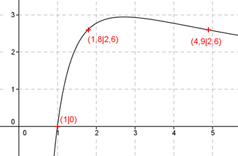
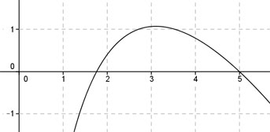

Aufgabe 101 Ergänzen Sie die Wertetabelle für den Graphen: 8 * ln x y = ---------- x x 1 1,8 oder 4,9 y 0 2,6 8 * ln 1 8 * 0 y = f(1) = ---------- = ------- = 0 1 1  An welchen Stellen x die Funktion den Wert 2,6 annimmt, ist elementar nicht zu ermitteln. Abgelesen: Es sind 2 Stellen. Zur Berechnung wendet man ein Näherungs- verfahren an, hier die Regula falsi. f(x) = 2,6 eingesetzt: 8 * ln x 2,6 = ---------- |*x x 2,6x = 8 * ln x |-2,6x 8ln x - 2,6x = 0 Als Funktion: y = 8 * ln x - 2,6 * x Die Nullstellen dieser Funktion (y = 0) entsprechen den gesuchten Werten für x.  Abgelesen: Nullstellen zwischen 1 und 2 und zwischen 4 und 6. (Vorzeichenwechsel für f(x)) Regula falsi: x0 = gesuchte Nullstelle x1 * |y(x2)| + x2 * |y(x1)| x0 = ------------------------------ |y(x1)| + |y(x2)| Nullstelle x0 zwischen 1 und 2 mit Excel ermittelt: A B C D E F G H I J 1 2 0,3452 2,6 0,3452 5,2000 5,5452 2,9452 1,8828 0,1668 1 1,8828 0,1668 2,6 0,1668 4,8953 5,0621 2,7668 1,8296 0,0758 1 1,8296 0,0758 2,6 0,0758 4,7569 4,8327 2,6758 1,8061 0,0335 1 1,8061 0,0335 2,6 0,0335 4,6958 4,7293 2,6335 1,7958 0,0146 1 1,7958 0,0146 2,6 0,0146 4,6692 4,6838 2,6146 1,7914 0,0063 1 1,7914 0,0063 2,6 0,0063 4,6576 4,6640 2,6063 1,7895 0,0027 Bedeutung der Felder: A: x1 = 1 B: x2 = 2 zu Beginn C: Absolutwert (Betrag) für y(x2) = y(2) = = 8 * ln 2 - 2,6 * 2 = 0,345 D: Absolutwert (Betrag) für y(x1) = y(1) = = 8 * ln 1 - 2,6 * 1 = 2,6 E: x1 * C = 1 * 0,345 = 0,345 F: x2 * D = 2 * 2,6 = 5,2 G: Zähler = E + F = 0,345 + 5,2 = 5,545 H: Nenner = C + D = 0,345 + 2,6 = 2,945 I = Näherung x0 = Zähler/Nenner = 5,545/2,945 = 1,883 J: y(i) = y(1,883) = 8 * ln I - 2,6 * I = = 8 * ln 1,883 - 2,6 * 1,883 = 0,167 Wenn die Nullstelle ziemlich genau getroffen wäre, müsste für y(1,883) in J etwa 0 herauskommen. Der errechnete Funktionswert y(1,883) in J ist noch etwas zu hoch und positiv, nämlich 0,167, liegt also über der x-Achse. Der Näherungswert x0 in I, nämlich 1,883, muss rechts von der gesuchten Nullstelle liegen, denn dort sind alle Funktionswerte positiv. Deswegen ersetzt man in der nächsten Rechnung die 2 durch den näher an der gesuchten Nullstelle liegenden Wert 1,883. Die gesuchte Nullstelle ergibt sich nach mehreren Näherungen mit ausreichender Genauigkeit zu x01 = 1,8 gerundet. Die Nullstelle zwischen 4 und 6 ergibt sich nach dem selben Verfahren zu x02 = 4,9 gerundet.